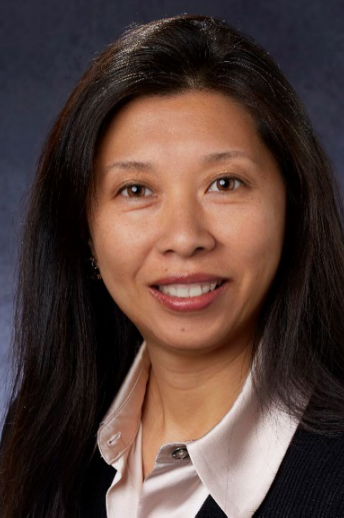

<!DOCTYPE html>
<html lang="en">
<head>
    <meta charset="UTF-8">
    <meta http-equiv="X-UA-Compatible" content="IE=edge">
    <meta name="viewport" content="width=device-width, initial-scale=1.0">
    <title>About</title>
    <link rel="stylesheet" href="./css/common.css">
</head>
<body>
    <header>
        <div class="container">
            <div class="logo"><a href="index.php"></a></div>
            <div class="nav">
                <ul>
                    <li><a href="index.php">Home</a></li>
                    <li><a href="about.php">About</a></li>
                    <li><a href="service.php">Service</a></li>
                    <li><a href="pipeline.php">Pipeline</a></li>
                    <li><a href="contact.php">Contact</a></li>
                </ul>
            </div>
            <div class="language">
                <button id="change">Chinese</button>
            </div>
        </div>
    </header>
    <section class="about_banner ">
        <div class="container">
             About Us
        </div>
    </section>
    <div class="title">
        Company Profile
    </div>
    <section class="about_company">
        <div class="container">
     
            <div class="teampic">
                
            </div>
            <div class="teamdes">
                <p>Evanston Pharma Inc was founded in 2003 and rebranded as
                    Evanstoninc LLC in 2012. It initially focused on API sales and
                    recently shifted its focus to consulting and preparation
                    product entry into the US market. The company has helped
                    numerous Chinese companies to gain FDA approval and
                    establish sales for their API products. Additionally, two
                    Chinese companies have successfully entered the US market
                    with their preparation products, with stable sales, through
                    Evanstoninc's agency. One of these companies is a publicly
                    listed firm in Zhejiang, while the other is based in Jiangsu.
                    There is also a Zhejiang-based listed company with a product
                    awaiting FDA on-site inspection and a completed sales
                    contract.</p>
            </div>
            <div class="clearf"></div>
        </div>
    </section>
    <div class="title">
        Management team
    </div>
    <section class="about_teams">
        <div class="container">
    
            <ul>
                <li>
                    <div class="pic">
                        
                    </div>
                    <div class="desc">
                        <div class="t"><h2>Jinming Liao</h2>Chairman</div>
                        <div class="n">
                            <p>Professional sales experts and senior BD with nearly 40 years of working experience in
                                the pharmaceutical industry, and as the registered agent of domestic companies in
                                the United States, including 25 years in the United States and 15 years in China. We
                                have good connections with major US companies such as Bristol-Myers Squibb, Pfizer,
                                Sandoz, Endo, Novartis, Johnson & Johnson, etc. They are proficient in exporting and
                                selling APIs and preparations from China to the United States, Brazil and other
                                countries, and CRO companies in Business development in China and the United
                                States.</p>
                            <p>Successfully established Novelstar Pharmaceuticals Inc, a complex company located in New
                                Jersey, USA, and attracted Fosun Pharma’s 20 million USD Series A investment</p>
                            <p>Biochemical engineering，bachelor of sciences of East China University of Science
                                and Technology （1983）</p>
                            <p>Licensed Pharmacist （1996 - Now）</p>
                        </div>
                    </div>
                    <div class="clearf"></div>
                </li>
                <li>
                    <div class="pic">
                        
                    </div>
                    <div class="desc">
                        <div class="t"><h2>Tina Guilder</h2>Senior VP of Commercial Operations</div>
                        <div class="n">
                            <p>Experience: 20+ years in Pharmaceutical / Healthcare Industry focusing on
                                corporate strategy, corporate business development, finance, and commercial
                                operations for generic and branded specialty products</p>
                            <p>Most recently, Tina was the CEO of Virtus Pharmaceuticals, a niche
                                pharmaceutical company focused on the development of products in generic
                                and specialty markets.</p>
                            <p>Prior to Virtus, Tina was the CEO of Twi Pharmaceuticals, a Taiwanese
                                pharmaceutical company specializing in the development, manufacturing and
                                commercialization of high barrier generic products with focus on the US and Asia
                                markets.</p>
                            <p>Prior to TWi, Tina was the Vice President Business Development and Alliance
                                Management of Teva Pharmaceuticals</p>
                            <p>Tina has served on the boards of Sunrise Pharmaceuticals; Virtus
                                Pharmaceuticals; TWi Pharmaceuticals; Genovi Pharmaceuticals; UNYQ, a
                                design & technology personalization & customization company; Anivive
                                Lifesciences, Inc., a biotech company; Pacific Symphony Orchestra; Chinese
                                Communities Leadership Council</p>
                            <p>MBA in international finance and marketing from University of Southern California</p>
                        </div>
                    </div>
                    <div class="clearf"></div>
                </li>
                <li>
                    <div class="pic">
                        
                    </div>
                    <div class="desc">
                        <div class="t"><h2>Mani Swaminathan</h2>VP – Business Development</div>
                        <div class="n">
                            <p>Experience: 20+ years in pharmaceutical industry with focus on P&L responsibility, Corporate Strategy,
                                Business Development, Sales, Commercial Operations in the Generics / 505(b)(2) / Specialty Pharma / OTC
                                and Active Ingredients space. Extensive international experience working with clients/partners/customers/suppliers
                                across China/India/EU/North & South America.</p>
                            <p>Recently founded Orspra Pharm LLC, as a virtual venture to identify and develop niche/challenging/potential firstgeneric opportunity products through partnership</p>
                            <p>Prior to Orspra, Mani was Head of Business development at Tris Pharma Inc, a pharmaceutical company focused on
                                Brand and Generics, with focus on 505(b)(2) and specialty products. He built the entire In.
                                Licensing practice and helped establish relationships with many Chinese companies.</p>
                            <p>Prior to Tris, Mani was President of Granules USA Inc, a subsidiary of Granules India Ltd which is a vertically
                                integrated pharmaceutical company with interests in Generics / OTC / Active Ingredients. He led the
                                company transition from an API player to Generics player and helped triple the revenue during his time</p>
                            <p>Prior to Granules, Mani was Director – Marketing for Malladi Drugs & Pharmaceuticals Ltd, India, where he
                                was heading their Sales team while based in India and helped expand in East Asia and Latin America. Later
                                moved to US and helped grow the US/North American market and helped acquire a competition (Novus
                                Fine Chemicals LLC) to double the revenue of the group and bring about a new business model.</p>
                            <p>MBA from Indian Institute of Management, Ahmedabad, India and a Bachelor’s degree in Food Science &
                                Dairy Technology from College of Dairy Science, Anand, India.</p>
                        </div>
                    </div>
                    <div class="clearf"></div>
                </li>
                <li>
                    <div class="pic">
                        
                    </div>
                    <div class="desc">
                        <div class="t"><h2>Vinod MelVani</h2>
                            VP of Sales and Marketing</div>
                        <div class="n">
                            <p>Experience: 25+ years in the pharmaceutical industry; recognized
                                expert in product commercialization and pharmaceutical distribution.</p>
                            <p>Vinod was CEO at Virtus Pharmaceuticals LLC through from April
                                2019 to June 2020 and was responsible for providing strategic
                                direction, management oversight and overall business execution
                                which led to a successful exit in May 2020.</p>
                            <p>Prior to Virtus, Vinod was President of Pharma Channel Consulting
                                to advise on initiatives including acquisition-related DD, set up
                                distribution infrastructure, contracting & pricing, and market
                                commercialization for PE firms and emerging generic manufacturers
                                from India and China.</p>
                            <p>Prior to Pharma Channel Consulting, Vinod spent 15+ years at
                                McKesson and was the SVP of Generics with 150 employees
                                overseeing sourcing, sales and supply chain for the generics
                                business of US market.</p>
                            <p>MBA from Case Western Reserve University and a Bachelor's degree
                                in Commerce from Mumbai University.</p>
                        </div>
                    </div>
                    <div class="clearf"></div>
                </li>
            </ul>
        </div>
    </section>
    <footer>
        <div class="container">
            © Evanstoninc LLC. All rights reserved.
        </div>
    </footer>
    <script src="./js/jquery-3.3.1.min.js"></script>
    <script src="./js/en.js"></script>
</body>
</html>